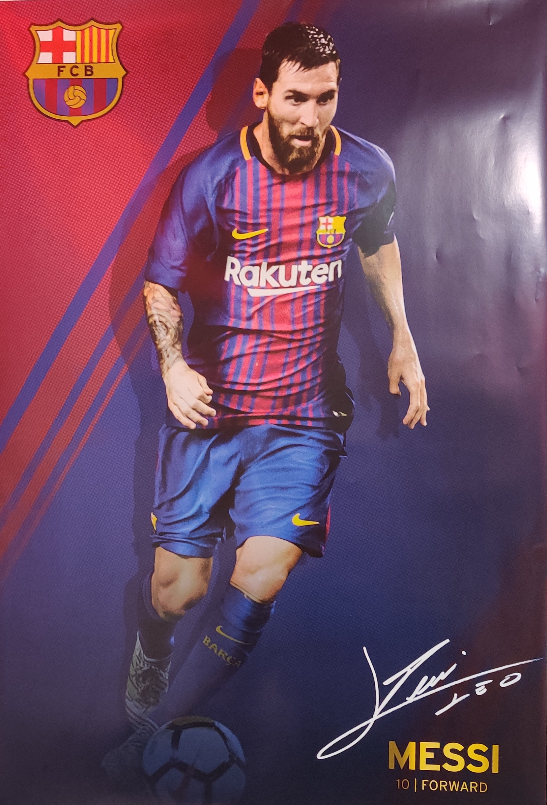
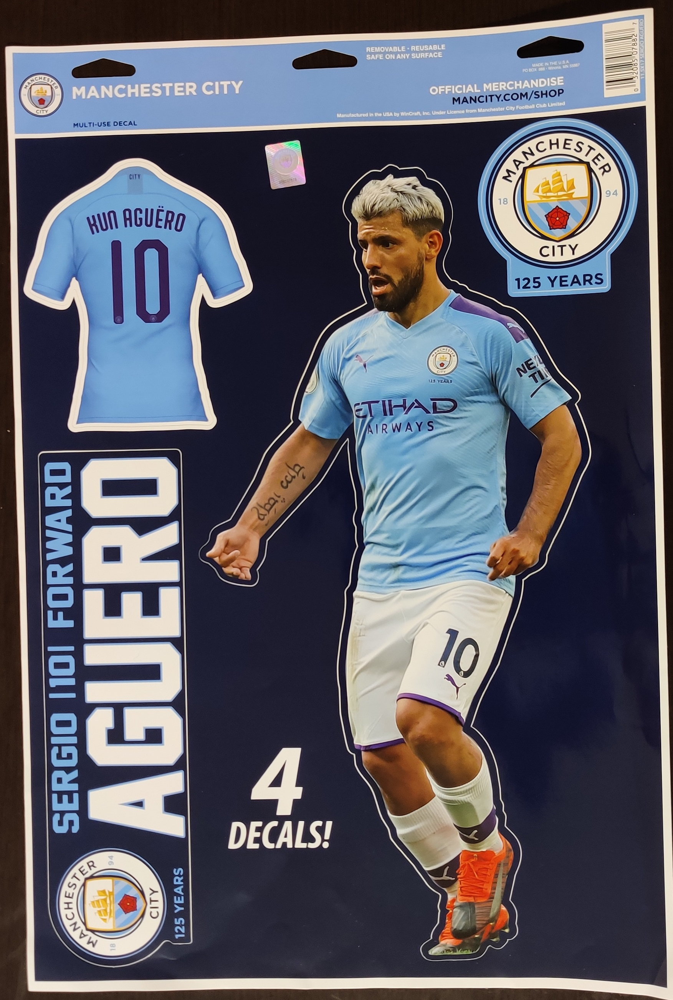

FC Barcelona is a spanish football team with a huge legacy. It has won several La Liga titles and a few UEFA Champions League titles. One of the players that I admire from the club is Lionel Messi.
Manchester City FC is an english football team which has come into the limelight in the past decade. It has won 4 premier league titles in the last 10 years and has performed well across different football tournaments. Some of it's stars are Sergio Aguero, Kevin De Bruyne, Raheem Sterling, etc.
